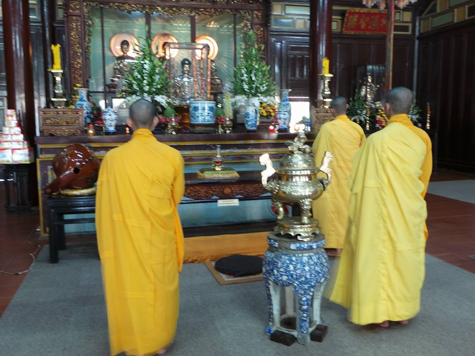
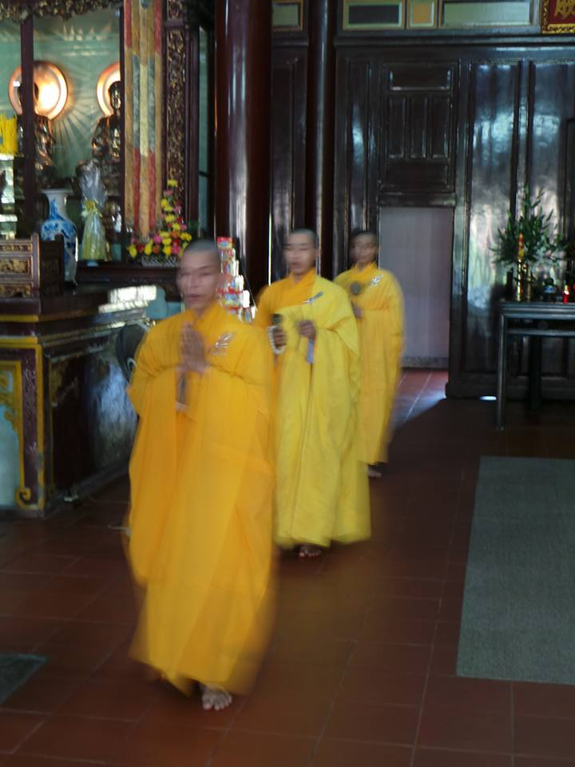
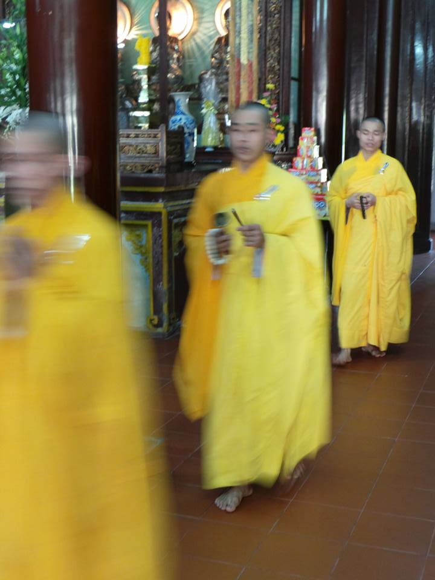
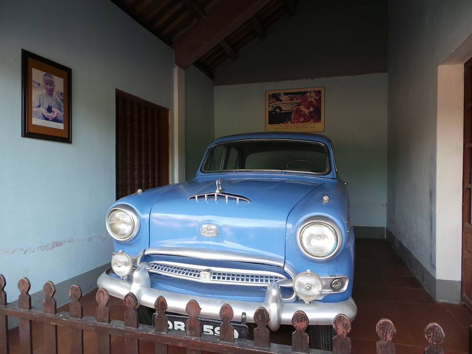
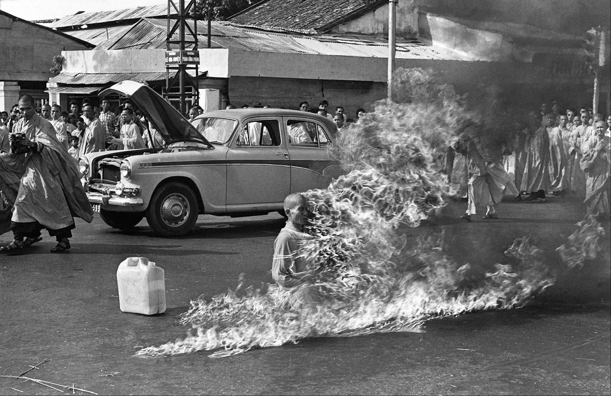
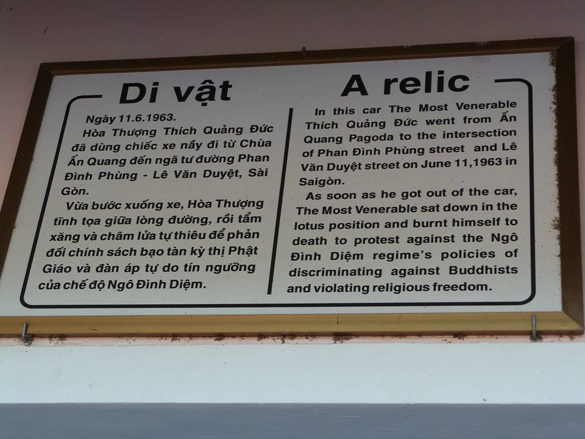
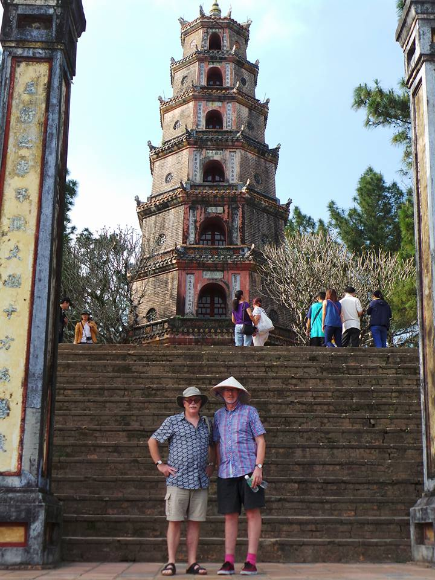
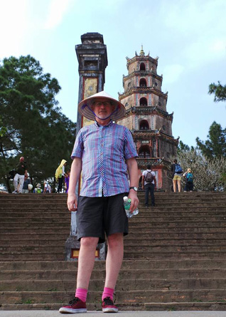

Possibly the most serene temple I've yet visited (Thien Mu Pagoda - Chùa Thiên Mu). Saffron-clad monks chanting rhythmically while beating bronze temple bells. I tried to capture the mood of the temple by action-freezing the shots although I'm not sure it worked. What do you think?
Also the Austin car that Buddhist monk Thich Quang Duc drove to Saigon where he set fire to himself in 1963 as a protest at the then president of Vietnam's policy against Buddhism. It can be seen in the background of the b/w picture. The photo made headline news around the world. The president was later assassinated.
Plus two auditionees for Huê's annual production of Turandot (panto-style) ...







